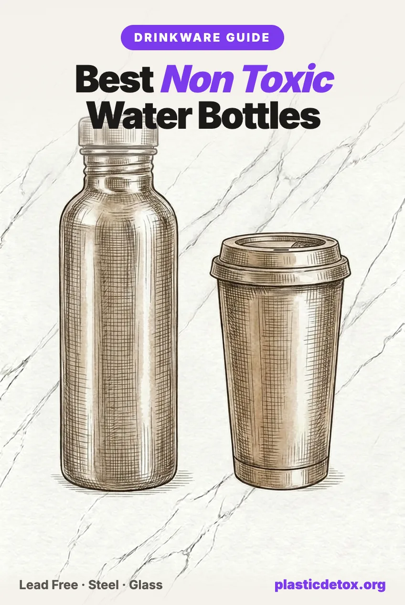

Best Non Toxic Water Bottles and Tumblers (2026): Plastic Free and Lead Free

In January 2024 Stanley confirmed something almost nobody who bought a Quencher knew: the pellet that seals the vacuum insulation in its tumblers contains lead. The lawsuit that followed was dismissed in April 2026, and we will explain why that dismissal is both fair and beside the point. The more useful discovery, for anyone standing in front of a wall of water bottles, is that the industry quietly splits in two. Some brands seal their bottles with lead and cover it. A few seal them without any lead at all. Since a reusable bottle touches everything you drink all day, this is one of the highest contact products you own, and it is worth getting right once.
The 30 Second Summary
- Most insulated bottles are sealed with lead. A pellet of roughly 40 to 60 percent lead closes the vacuum hole in the base, then a cover hides it. Stanley admitted it in 2024, and Yeti says the same thing in its own manufacturing FAQ.
- Sealed lead is a low risk until the base cover fails. That is why the Stanley class action was dismissed in April 2026. But independent testers have found bottles with the leaded area exposed or covered only by paint, and kids drop bottles constantly.
- A short list of brands skips the lead entirely. Hydro Flask has sealed without lead since 2012, Owala since launch, and Klean Kanteen closes the vacuum with a silica glass seal. All three have passed independent XRF testing.
- Lead free is only half our standard. Plastic free is the other half. Every pick in this guide puts nothing but steel, glass or silicone at your lips.
- Kids bottles have the worst track record. Contigo recalled 5.7 million kids bottles over detaching spouts, and Cupkin recalled 346,000 kids cups for illegal lead levels. Our kids pick is a Klean Kanteen Kid Classic.
- Our top pick overall is the Hydro Flask 32oz Wide Mouth: lead free sealing since 2012, a bare steel interior you drink straight from, and the largest base of long term happy owners of any bottle in this guide.
- Best overall: Hydro Flask 32oz Wide
- Best glass: Lifefactory 22oz
- Zero plastic: Klean Kanteen Reflect
- Plastic free tumbler: Tupkee All Glass Tumbler
- Best for kids: Klean Kanteen Kid Classic 12oz
1. Why Your Bottle Is Worth Getting Right
A water bottle is not like a container you use twice a week. It is the surface your drinking water sits against for hours, every day, for years. Whatever that surface gives up, you drink.
The baseline it replaces is grim. A 2024 Columbia and Rutgers study found roughly 240,000 nanoplastic particles per liter in bottled water, and single use PET bottles shed more as they warm up in a car or a gym bag. Any decent reusable bottle beats that. But reusable does not automatically mean clean:
- Plastic reusable bottles made from Tritan and similar copolyesters are marketed on being BPA free, and BPA free is not the same as safe. Many BPA replacements still release estrogenic compounds, and every plastic bottle sheds particles as it scratches and ages.
- Insulated stainless bottles put excellent 18/8 steel against your water, then most brands seal the vacuum layer with a pellet that is roughly half lead. That is the part of the story Stanley made famous.
- Cheap unbranded bottles from marketplace sellers have no published materials testing at all. More on that below, because a surprising number of you have asked us about them.
If you are still buying cases of bottled water, start with our guide to getting off bottled water and filtering PFAS and microplastics at home. A clean bottle is step two; clean water to put in it is step one.
2. The Lead Pellet, Explained
Every double wall insulated bottle is made the same way: two steel walls with the air pumped out from between them, because a vacuum is what keeps coffee hot and water cold. Pulling that vacuum leaves a small hole in the base, and the hole has to be sealed airtight. The industry standard way to seal it is to melt a small pellet of solder over the hole. Independent XRF testing has measured those pellets at roughly 400,000 to 600,000 parts per million lead, which is to say the pellet is 40 to 60 percent lead by weight. A stainless cover or cap is then fixed over the base so the leaded dot is not exposed.
Two honest things need to be said at once about this design.
First, sealed lead on the outside base of a bottle is not poisoning your water. The pellet never contacts the liquid, and there is no route from the base of the bottle into your drink. That is why the federal judge dismissed the Stanley class action in April 2026: the plaintiffs could not show a plausible way an intact cup exposes anyone to lead. If you own a Stanley you love and its base is intact, nothing in this article says you are being harmed by it.
Second, the design has a real failure mode, and it is not hypothetical. The protection is a cover, and covers fail. Independent testing by Lead Safe Mama found a Corkcicle bottle with the leaded sealing dot fully exposed on the bottom at 597,000 ppm lead, and ThermoFlask bottles where the leaded area was covered by nothing but paint. Bottles get dropped, bases get dinged, covers pop off, and the bottles that get dropped most belong to children. Lead needs no route into your water to matter; a bare leaded dot on the outside of a bottle is a touch surface. There is no known safe level of lead exposure, which is why our position is simple: when several brands seal the same vacuum without any lead, pick one of those and stop thinking about your base cover forever.
3. Who Uses Lead and Who Does Not
This is the table we wish had existed in 2024. It reflects company statements, CPSC recall records, and independent XRF testing, mostly by Lead Safe Mama, whose work forced most of these answers into the open.
| Brand | Vacuum seal | What the record shows | Our verdict |
|---|---|---|---|
| Klean Kanteen | Lead free, silica glass seal | Seals insulated bottles with a silica glass plug instead of solder. B Corp, climate neutral certified. No recalls on record. | Buy |
| Hydro Flask | Lead free since 2012 | Used leaded solder before 2012, then switched to its TempShield lead free sealing process after independent testing flagged it. Current production tests lead free. | Buy |
| Owala | Lead free since launch | States it has always used lead free sealing; independent XRF test in 2022 found the insulated bottle lead free. But the FreeSip lid, spout and straw are plastic and they are the drink path, so you sip through plastic all day. | Lead free, not plastic free |
| 24Bottles | No lead findings on record | Italian brand, 18/8 stainless with no interior coating. No recalls and no adverse test results we could find, but also no published independent seal testing. | Buy |
| Stanley | Leaded pellet, covered | Confirmed the leaded sealing pellet in January 2024. Class action dismissed April 2026 because an intact cup shows no exposure route. Fine while intact; retire if the base cover fails. | Careful |
| Yeti | Leaded pellet, covered | States in its manufacturing FAQ that the sealing bead contains lead, fully encapsulated. Drinkware itself tests lead free on accessible surfaces. | Careful |
| Simple Modern | No clear statement | Says accessible components are lead free, which does not answer the pellet question. Accessible surfaces have tested clean. | Careful |
| Contigo | Mostly plastic bottles | Core line is Tritan plastic. Recalled 5.7 million kids bottles in 2019 over detaching spouts, then re announced in 2020 when replacement lids failed the same way. | Careful |
| Iron Flask, ThermoFlask, Corkcicle | Lead findings | Independent testing found lead at the base seal: exposed on a Corkcicle, under paint only on ThermoFlask, positive results on Iron Flask as recently as 2023. | Skip |
| Unbranded marketplace bottles | Unknown | Names like Milomex are sourcing houses, not bottle makers. No published materials testing, no one accountable for the seal. You cannot vet what nobody discloses. | Skip |
Hydro Flask, Owala, Contigo and 24Bottles are among the most searched brands in our Brand Check tool, which is what prompted this guide. Type any brand in there for our verdict, and the reasoning, in ten seconds.
4. The Four Point Bottle Check
Brands change owners, factories and specs, so a list of names ages faster than a method. Here is the method. Four checks cover everything we screened for in this article.
One detail from check two is worth underlining, because it is the quiet advantage of the unfashionable bottle: a single wall bottle has no vacuum, no hole, and no sealing pellet. There is nothing to seal and nothing to hide. It will not keep water cold for a day, but it is lighter, cheaper, and structurally incapable of having the lead problem. That is a big part of why our zero plastic pick is one.
5. The Bottles That Pass
Every pick below passed the same five screens we apply to everything we recommend: materials, packaging and coatings, independent test results, lawsuits, and recalls. And because this is a plastic detox site, one more gate sits on top: no plastic in the drink path. On every bottle here you drink from a bare steel or glass rim, never through a plastic spout or straw. Where a cap contains plastic it sits above the waterline, we say so on the card, and the Reflect removes plastic from the product entirely. Prices are approximate.

Hydro Flask 32oz Wide Flex Cap
Double wall 18/8 stainless with TempShield vacuum insulation, sealed without lead since 2012, a switch the company made after independent testing flagged its old solder. Bare steel interior, powder coat exterior only. Wide mouth takes ice; the flex cap is BPA free plastic with a silicone gasket. Cold 24 hours.
View →
Lifefactory 22oz Glass Bottle
Borosilicate glass, the lab grade type that handles temperature swings, in a food grade silicone sleeve that stays on in the dishwasher. Polypropylene screw cap with a carry loop sits above the waterline when upright. No paints or interior coatings. Same glass and sleeve construction as our top rated baby bottles.
View →
Klean Kanteen Reflect 27oz
The no plastic anywhere option: 18/8 stainless body, mirror polished with no paint or powder coat, and a cap made of stainless steel, sustainably harvested bamboo and a food grade silicone O ring. Single wall, so no vacuum seal exists. Three materials total, all of them inert.
View →
24Bottles Clima 17oz
Italian designed 18/8 stainless with no interior coating or epoxy liner, the detail most painted bottles get wrong. Double wall, cold 24 hours, hot 12, and among the lightest insulated bottles in its size. Screw cap is BPA free plastic. Certified B Corp and climate neutral. No recalls or adverse findings on record.
View →Where is Owala? The bottle is genuinely lead free, and the table above says so. It is not in our picks because the FreeSip lid, spout and straw are plastic, and they are the drink path: you sip through plastic every time you use it. If you already own one it is safe and lead free; when the lid wears out, move to a steel rim or glass pick rather than replacing it. The same logic removes every 40 oz straw tumbler in the next section.
Every bottle and tumbler in this guide is also in our store, alongside the rest of our vetted drinkware, kettles and water filters. One accessory worth knowing: if you own any Klean Kanteen Classic bottle, the all steel Loop Cap swaps on and makes the entire bottle plastic free for about fifteen dollars.
6. Tumblers Without Plastic
The 40 oz handle tumbler Stanley made famous has a problem our standard cannot get around: every version of the format, from every brand, puts a plastic lid and a plastic straw in the drink path. A lead free 40 oz tumbler fixes the seal question and still has you sipping on plastic all day, so none of them earn a card here, and that includes the lead free brands we like. What does earn a card: tumblers where your drink meets only glass, steel or silicone.

Tupkee Double Wall Glass Tumbler 8oz
Hand blown double wall borosilicate glass where even the lid is glass, sealed with a food grade silicone ring. The drink path is glass and silicone, nothing else. The double wall keeps drinks warm without scorching your hand. Fragile, and the silicone seal is not fully leakproof.
View →
JOCO Reusable Glass Cup 12oz
Borosilicate glass body with a medical grade silicone lid and sleeve; the brand states the product is 100 percent plastic free. Barista standard sizing that fits under an espresso machine. Not insulated and not fully leakproof, a cafe cup rather than a commuter mug.
View →Both live in the travel mug section of our store. If the 40 oz handle and straw format is truly non negotiable for you, the lead free brands in the table above are where to look, but we are not going to put a card on a product that has you drinking through plastic.
7. Kids Bottles and the Recall Problem
Kids drinkware is where this category's track record is genuinely bad, and the failures came from both directions at once.
- Contigo, 2019 and again 2020: 5.7 million Kids Cleanable bottles recalled after 427 reports of the silicone spout detaching, with 27 spouts found in children's mouths. The replacement lids then failed the same way, forcing a second recall of the same product.
- Cupkin, 2023: 346,000 kids stainless cups sold on Amazon recalled for violating the federal lead content ban. The lead was in the product itself, on a cup marketed specifically for children.
The pattern is the lesson. One failure was mechanical, one was material, and both happened on products designed for the people most vulnerable to each. A kids bottle needs the simplest possible construction from a company with a testing record: bare stainless, no vacuum seal or a lead free one, and a spout that cannot come apart into a mouth sized piece.

For the full nursery picture, from bottles to cups to food storage, see our guides to the best non toxic baby bottles and the top 100 baby and kids products.
8. Care, Dents, and When to Replace
A good stainless bottle is close to a lifetime purchase, which is part of its case. A few habits keep it that way.
- Wash plastic lids by hand, or replace them more often. Dishwasher heat is what ages plastic fastest. The bottle body can take the dishwasher; the cap is the wear part. Most brands here sell replacement caps and seals separately, which is a feature, not an upsell.
- A side wall dent is cosmetic. A base hit deserves a look. On a lead free brand, the worst case of a hard drop is lost insulation. On a pellet brand, check that the base cover is still seated; if it is loose or gone, retire the bottle.
- If an insulated bottle stops insulating, the vacuum is gone. It is now a heavy single wall bottle. Safe to drink from, but it will sweat and it has told you its structural story.
- Skip aggressive scrubbing on painted exteriors. Powder coats on the brands above are exterior only and tested, but chips look bad and go downhill. Bare steel and brushed finishes age best, which is one more point for the Reflect.
- Milk, formula and protein shakes need a full teardown wash. Straws, gaskets and spouts hold residue. Pull every silicone piece when you wash, especially on kids bottles.
9. Frequently Asked Questions
Is it safe to drink from a Stanley cup?
For an intact cup, the measurable risk is low. Stanley confirmed in January 2024 that a pellet containing lead seals the vacuum insulation, but it sits under a stainless steel cover on the base and never touches your drink. A federal judge dismissed the class action in April 2026 for exactly that reason, finding no plausible route of exposure from an intact cup. The catch is the words intact and base cover. If the round cover on the bottom ever comes off, the leaded area is exposed and the cup should be retired. Since several brands seal the vacuum without any lead at all, we would rather start there.
Does Hydro Flask have lead in it?
Not since 2012. Hydro Flask products made before then used leaded solder, independent testing flagged it, and the company switched to a lead free vacuum sealing process it calls TempShield. Current production has repeatedly tested lead free in independent XRF testing, including by Lead Safe Mama, whose early results prompted the change. It is one of the few big insulated brands with a clean, dated, public answer on the record.
Are Owala water bottles non toxic?
It is lead free, and that matters: Owala states it has used lead free sealing since launch, and independent XRF testing of an insulated Owala bottle by Lead Safe Mama in 2022 found it lead free. The interior is bare 18/8 stainless steel and there are no recalls on record. The reason it is not in our picks is plastic. The FreeSip lid, spout and straw are plastic and they are the drink path, so you sip through plastic every time, and on this site plastic free includes the drink path. If you already own one, keep using it without worry; when the lid wears out, switch to a bottle you drink from a steel or glass rim.
Which is better, a stainless steel or a glass water bottle?
Both put a stable, non leaching material against your water, and both beat any plastic bottle. Bare 18/8 stainless steel is the practical winner for anything that leaves the house: it does not shatter, it can be insulated, and it shrugs off a dishwasher. Borosilicate glass is the purist winner at a desk or bedside: you can see it is clean, it holds no flavors, and there is no seal or solder question at all because there is no vacuum layer. The right answer for most people is one of each.
Are Tritan plastic bottles like Contigo and Nalgene safe?
They are BPA free, which is not the same thing as safe. Tritan and similar copolyesters replaced BPA with related chemistries, and independent research has found that many BPA free plastics still release estrogenic compounds, especially after heat, sunlight and dishwasher cycles. Plastic bottles also shed microplastic particles into water as they age and scratch. We cover the replacement chemical problem in BPA free does not mean safe. A plastic bottle is still better than single use bottled water, but if you are buying new, bare stainless or glass removes the question entirely.
Should I replace a dented insulated bottle?
A cosmetic dent on the side wall is usually fine; the water still only touches the intact inner wall. Watch two things. First, if the bottle stops insulating, the vacuum layer has been breached and it is time to replace it. Second, on brands that seal with a leaded pellet, check the round cover on the base. If a drop knocks that cover loose or off, the leaded sealing area is exposed on the outside of the bottle and it should be retired immediately, especially around kids.
Related Articles
- How to Remove Microplastics From Bottled Water
Why bottled water is the baseline to escape, and how to do it. - How to Filter PFAS and Microplastics From Water
Clean water to put in the clean bottle, filter by filter. - BPA Free Does Not Mean Safe
The replacement chemical problem behind Tritan and friends. - Best Non Toxic Baby Bottles
The same materials logic, applied to the smallest drinkers.